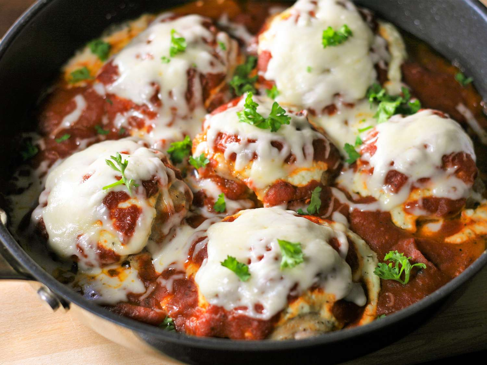

Baked Italian Chicken Thighs
Home

Description
These juicy Italian chicken thighs are topped with a flavorful blend of 3 cheeses and your favorite marinara sauce. Serve over pasta or rice or alongside roasted potatoes for a tasty weeknight meal. I like to shred my own cheese, as I find it melts better, but feel free to use pre-shredded to save time.
Ingredients
- ½ cup low-fat ricotta cheese
- ¼ cup freshly grated Parmesan cheese
- ½ teaspoon Italian seasoning
- ⅛ teaspoon salt
- 1 pound skinless, boneless chicken thighs
- 1 teaspoon garlic powder
- salt to taste
- 1 tablespoon olive oil
- 1 ½ cups marinara sauce
- ¾ cup shredded mozzarella cheese
- 2 tablespoons chopped fresh parsley (Optional)
Steps
- Preheat the oven to 375 degrees F (190 degrees C).
- Combine ricotta cheese, Parmesan cheese, Italian seasoning, and salt in a small bowl; set aside.
- Season chicken thighs on both sides with garlic powder and salt.
- Heat olive oil in an oven-proof skillet over medium-high heat. Cook chicken thighs, smooth-side down, in hot oil until the bottoms are browned, 3 to 4 minutes. Flip thighs over and remove the skillet from heat. Top each thigh with an equal amount of ricotta cheese mixture. Spoon marinara sauce on top and around chicken thighs.
- Bake in the preheated oven until chicken is no longer pink in the center and the juices run clear, about 25 minutes. An instant-read thermometer inserted into the centers of thighs should read at least 165 degrees F (74 degrees C).
- Top each thigh with mozzarella cheese and continue baking until cheese is melted, 2 to 3 minutes. Garnish with parsley to serve.